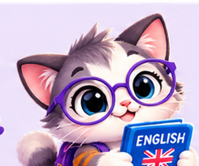
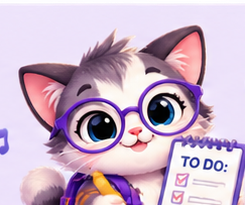

🐾 Tu aventura con el inglés empieza aquí
¡Aprende inglés con Gatolingo!
Tu gatito guía te acompaña en 20 mini lecciones A1, juegos, pronunciación y recompensas. ¡Aprende jugando y empieza gratis!
Empezar ahora →🏆 Mi progreso
0 XP
Puntos acumulados
0/20
Lecciones completadas
0%
Avance del curso A1
🐱 A tu ritmo
El progreso se guarda solo en este navegador.

📚 Curso A1 · 20 mini leccionesEstudia vocabulario, escucha y responde para avanzar. Este curso es introductorio y no equivale a una certificación A1.
📖 Vocabulario y pronunciación
✍️ Comprueba lo aprendido
🎮 Desafío rápido

📥 RecursosGRATIS
Plan A1 de 4 semanas
Descarga una ruta de estudio sencilla.
PRÓXIMAMENTE
English Starter Pack
Cuaderno premium de ejercicios. Todavía no está a la venta.